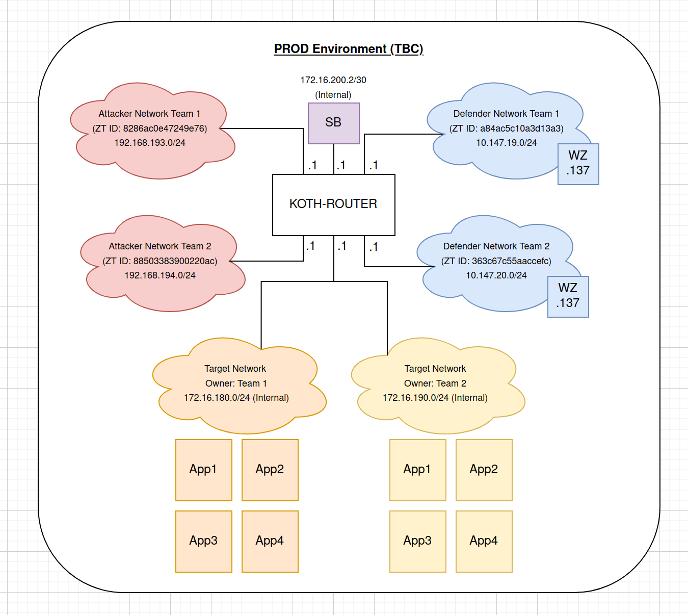

For this CTF, it is currently divided into two parts: 'Attack' and 'Defense'. The attack part of the challenge involves exploiting a target system or application to gain access to sensitive data or perform unauthorized actions. The defense part involves defending the target system or application from the attacks performed by the other teams.
To start off, here's the overview of the CTF network diagram:

Each team currently has the following assets: